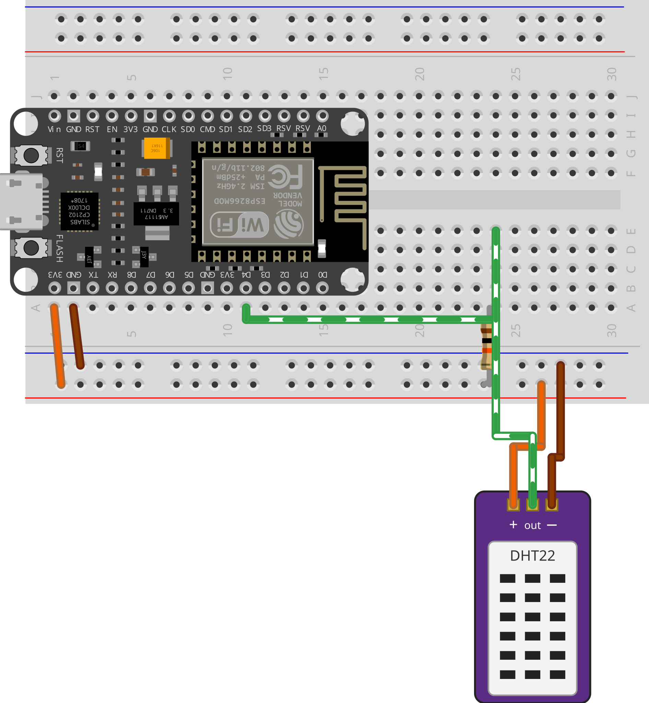

Letras impresas en la protoboard (A abajo, J arriba). Todo lo de la columna 24 está unido entre A y E.
| 3V3 del NodeMCU | A1 → riel de abajo +3V3 (línea roja) |
| GND del NodeMCU | A2 → riel de abajo GND (línea azul) |
| D4 (datos) | Puente de A11 (junto al pin D4) a C24 |
| R1 10 kΩ | De pie: A24 → riel de abajo +3V3, col. 24 (café, negro, naranja) |
| DHT22 out | E24 |
| DHT22 + | Riel de abajo +3V3, col. 26 |
| DHT22 − | Riel de abajo GND, col. 27 |
Qué medir